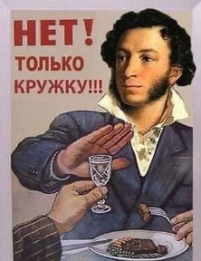
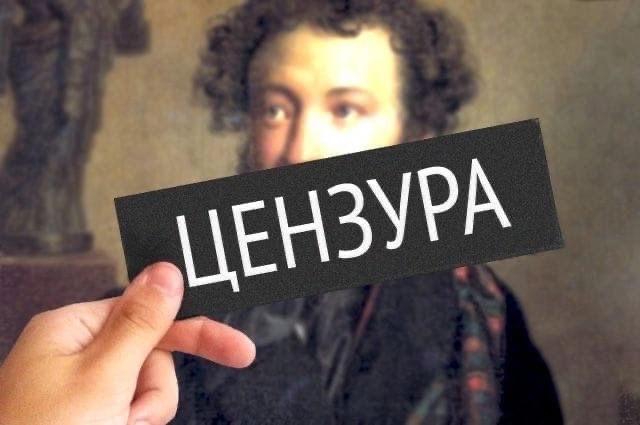
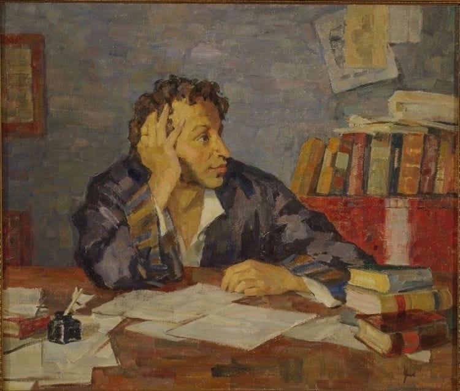
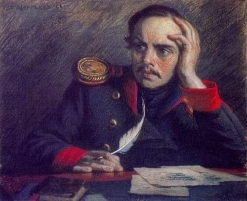

Золотой мат
Как много слов и эмоций можно заменить небольшим, но красочным нецензурным выражением.
И как писатели и поэты использовали данный способ в своих произведениях?
Кто из классиков XVIII-XX веков употреблял брань в своём творчестве?
И как писатели и поэты использовали данный способ в своих произведениях?
Кто из классиков XVIII-XX веков употреблял брань в своём творчестве?
Ненормативная лексика в XVIII-XX веках оставалась уделом «неофициальной» части творческого наследия поэтов и писателей: эпиграммы и сатирические стихотворения Пушкина, Лермонтова и других авторов. Срамные слова, содержавшиеся в произведениях, они сами не публиковали, и вообще в России обнародованию не подлежали. Речь была нормативной, но существовали достаточно неприличные произведения, хотя они оставались за пределами культурной нормы.
В 70-80-е годы прошлого века человек, публично ругающийся матом, воспринимался обществом либо как пьяный, либо как сумасшедший. Когда собиралась компания из мужчин и женщин, мат был запрещен. Это понимали как самые отвязные сквернословы, так и сильно выпившие. Тогда почему в литературе нередко встречалась ненормативная лексика?
В 70-80-е годы прошлого века человек, публично ругающийся матом, воспринимался обществом либо как пьяный, либо как сумасшедший. Когда собиралась компания из мужчин и женщин, мат был запрещен. Это понимали как самые отвязные сквернословы, так и сильно выпившие. Тогда почему в литературе нередко встречалась ненормативная лексика?

Если рассматривать классиков, то нельзя упустить Пушкина. Александр Сергеевич — великий поэт, экспериментатор и создатель современного русского языка, на котором мы говорим по сей день.
Пушкин А.С. обращался к нецензурной лексике в поисках новых художественных приёмов, тогда он формировал литературный язык. Но никто не декларировал обсценную лексику со сцены. Это изобретение уже более поздних времён.
Александр Сергеевич был одним из первых, кто использовал мат в своих текстах. Тогда цензура еще вырезала все неприличные выражения до печати, но многие стихотворения ходили в пересказах и переписках. Самая известная эпиграмма – на князя Дондукова, который получил свой пост в Академии наук, благодаря определённой связи с графом Уваровым:
Пушкин А.С. обращался к нецензурной лексике в поисках новых художественных приёмов, тогда он формировал литературный язык. Но никто не декларировал обсценную лексику со сцены. Это изобретение уже более поздних времён.
Александр Сергеевич был одним из первых, кто использовал мат в своих текстах. Тогда цензура еще вырезала все неприличные выражения до печати, но многие стихотворения ходили в пересказах и переписках. Самая известная эпиграмма – на князя Дондукова, который получил свой пост в Академии наук, благодаря определённой связи с графом Уваровым:
“В Академии наук заседает князь Дундук
Говорят, не подобает Дундуку такая честь
Отчего ж он заседает?
Оттого что жопа есть.”
Говорят, не подобает Дундуку такая честь
Отчего ж он заседает?
Оттого что жопа есть.”
Были и совершенно неподобающие стихи, в которых прямо указывалось на совершение полового акта:
“... Я дал и третий поцелуй,
Она проснуться не желала,
Тогда я ей засунул хуй –
И тут уже затрепетала.”
Она проснуться не желала,
Тогда я ей засунул хуй –
И тут уже затрепетала.”
Также часто использовали нецензурную лексику в своих произведениях Лермонтов, Маяковский и Есенин.
Михаил Лермонтов, как никогда эмоционально, с матом выражает свои мысли, иногда пошлые, о жизни, о любви, о вечном.
Михаил Лермонтов, как никогда эмоционально, с матом выражает свои мысли, иногда пошлые, о жизни, о любви, о вечном.
“– Мой друг! Ему я говорил:
Ты не в свои садишься сани,
Танцоркой вздумал управлять!
Ну где тебе её ебать,
Но обратимся поскорее
Мы к нашим буйным молодцам.”
Ты не в свои садишься сани,
Танцоркой вздумал управлять!
Ну где тебе её ебать,
Но обратимся поскорее
Мы к нашим буйным молодцам.”

Владимир Маяковский использовал мат, как инструмент протеста против традиционных утех и за раскрепощение рабочего класса. Да и простые половые акты Владимиру Владимировичу не чужды, а их описания не имели конкурентов:
“Я в Париже живу как денди.
Женщин имею до ста.
Мой хуй, как сюжет в легенде,
Переходит из уст в уста.”
Женщин имею до ста.
Мой хуй, как сюжет в легенде,
Переходит из уст в уста.”
Сергей Есенин тоже не мог обойтись без бранной речи. Многие из его произведений оказались в напечатанном виде только к эре интернета. В это время мат уже нельзя было как-то контролировать. Есенин очень хорошо обращался с бранными словами, одно только слово «блядюга» ввёл в речь именно он!
“Пой же, пой! В роковом размахе
Этих рук роковая беда
Только знаешь, пошли их на хер…
Не умру я, мой друг, никогда.”
Этих рук роковая беда
Только знаешь, пошли их на хер…
Не умру я, мой друг, никогда.”
Ненормативная лексика может быть элементом художественного произведения, но надо рассматривать, в каких целях и для какой аудитории. Культура речи предполагает знание, где можно и где нельзя использовать какие-либо слова. Безусловно, есть какие–то ограничения, но они должны быть установлены самим автором, должна быть внутренняя цензура, а она воспитывается уровнем образования.
 
Костина Ольга Витальевна, начальник отдела медиасопровождения МАУ ДПО “Новосибирский институт современного образования”:
“Тема употребления ненормативной лексики всегда вызывает интерес, особенно у молодежи, так как матерные слова чаще всего имеют отношение к половым органам и сексуальным контактам, а это, соответственно, вызывает сильный эмоциональный отклик (положительный или отрицательный) у большинства читателей.
Для меня использование обсценной лексики в художественных произведениях вполне допустимо и приемлемо, если я понимаю уместность данных выражений в конкретной речевой ситуации. На мой взгляд, матерные слова могут быть использованы даже талантливо, например, для создания образа героя, выражения эмоций, восприятия окружающей действительности глазами персонажа. Такие примеры можно встретить у Венедикта Ерофеева, Владимира Сорокина, Татьяны Толстой, Виктора Пелевина. Да и все примеры использования ненормативной лексики в творчестве русских поэтов XVIII–XX веков, которые приведены в данной работе, лишний раз доказывают, что талант, величие и масштаб личности нисколько не зависят от употребления или неупотребления грубых выражений.”
Обсценная лексика была и остается частью народной речи, но относились к ней в различных регионах по-разному. Так, на юге мат был атрибутом исключительно мужчин. Женщины же не имели права даже слушать обсценную лексику. На севере страны — наоборот, использовать подобную лексику можно было даже при детях.
Мат был рудиментом язычества, нес в себе определенный смысл и служил своего рода оберегом от злых сил. Использовались лишь слова, связанные с половыми органами-символами плодородия и продолжения рода, которые вовсе не были запрещены. Во многих регионах центральной и северной Руси скабрезные словечки составляли повседневную языковую картину крестьян и вошли в фольклор.
Мат был рудиментом язычества, нес в себе определенный смысл и служил своего рода оберегом от злых сил. Использовались лишь слова, связанные с половыми органами-символами плодородия и продолжения рода, которые вовсе не были запрещены. Во многих регионах центральной и северной Руси скабрезные словечки составляли повседневную языковую картину крестьян и вошли в фольклор.
Автор: Анна Устименко